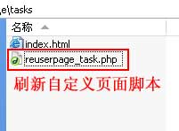
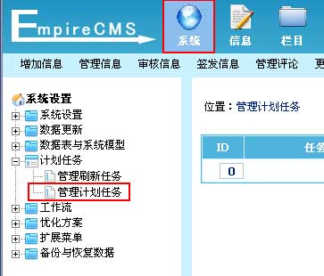
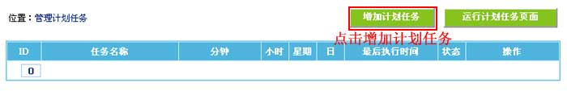
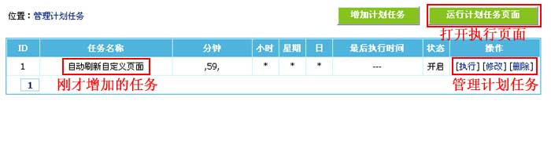
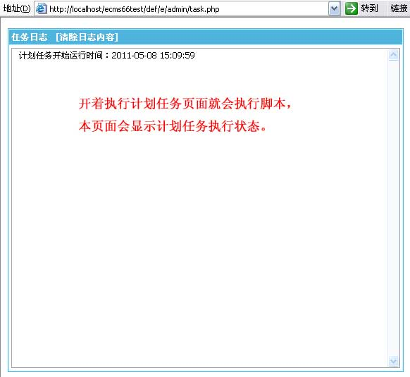

| 一、计划任务介绍： |
| 1、计划任务是用于定时执行指定php脚本的功能。 2、增加计划任务的步骤： (1)、制作要执行的php脚本文件； (2)、后台增加计划任务，指定要执行的脚本； (3)、完成。 |
| 二、增加计划任务 | ||||||||||||||||
| 1、先制作要执行的php脚本文件： | ||||||||||||||||
|  | ||||||||||||||||
| 2、登录后台，单击“系统”菜单，选择“管理计划任务”子菜单，进入管理计划任务界面： | ||||||||||||||||
|  | ||||||||||||||||
| 3、进入管理计划任务界面，点击“增加计划任务”按钮进入增加计划任务界面： | ||||||||||||||||
|  | ||||||||||||||||
| 4、进入增加计划任务界面： | ||||||||||||||||
 |
||||||||||||||||
|
| 三、进入管理计划任务界面： |
|  |
| 四、执行计划任务方法说明： |
| 执行计划任务需要开着 e/admin/task.php 页面才会执行。 |
|  |
| 相关链接： |
| 1、帝国网站管理系统功能解密之计划任务功能 |